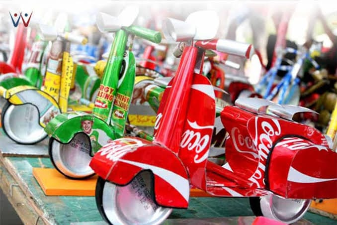

KOLEKSI PRODUK / 04
Miniatur Sepeda dari Kaleng Bekas

Ulasan Produk
Miniatur sepeda dari kaleng bekas merupakan kerajinan daur ulang yang memanfaatkan kaleng minuman bekas menjadi benda berbentuk sepeda mini. Kaleng dibentuk menjadi bagian-bagian sepeda, seperti rangka, roda, setang, dan tempat duduk.
Produk ini memiliki bentuk yang unik dan menarik sehingga dapat digunakan sebagai hiasan meja, pajangan, atau suvenir. Selain mengurangi limbah kaleng, kerajinan ini juga melatih kreativitas dan dapat memiliki nilai jual.
Alat dan Bahan
- Kaleng minuman bekas.
- Kawat bekas.
- Tutup botol atau potongan kaleng untuk roda.
- Lem yang kuat.
- Cat atau hiasan tambahan (opsional).
- Gunting khusus logam.
- Tang.
- Penggaris.
- Spidol.
Langkah Kerja
- Siapkan kaleng minuman bekas, lalu pastikan sudah bersih dan kering.
- Buat pola bagian-bagian sepeda, seperti rangka, roda, setang, dan tempat duduk.
- Potongan kaleng disiapkan dengan bantuan orang dewasa.
- Bentuk bagian-bagian tersebut menjadi rangka sepeda mini.
- Siapkan dua roda dari tutup botol atau bahan bekas lainnya.
- Susun roda dan rangka hingga membentuk sepeda mini.
- Tambahkan setang dan tempat duduk agar bentuk sepeda semakin jelas.
- Rapikan hasil karya dan tambahkan cat atau hiasan jika diperlukan.
- Periksa hasil akhir agar miniatur dapat berdiri dengan baik.
Catatan: Pemotongan kaleng harus dilakukan oleh orang dewasa atau dengan pengawasan guru karena bagian tepi kaleng dapat melukai tangan. Pastikan tidak ada bagian tajam yang terbuka.
Estimasi Biaya
A. Biaya Alat
Alat : Rp 0
B. Biaya Bahan
| Nama Bahan | Harga |
|---|---|
| Kaleng minuman bekas | Rp 0 |
| Kawat bekas | Rp 0 |
| Tutup botol bekas | Rp 0 |
| Lem | Rp 3.000 |
| Cat bekas | Rp 0 |
| Total | Rp 3.000 |
C. Harga Jual
Harga jual miniatur sepeda dari kaleng bekas diperkirakan sebesar Rp 15.000 per unit.
D. Laba
Laba bersih per unit = Harga Jual - HPP
Rp 15.000 - Rp 3.000 = Rp 12.000 per unit.
Produk Kreatif dari Barang Bekas
Barang bekas tidak selalu menjadi sampah. Dengan kreativitas, barang yang sudah tidak digunakan dapat diolah menjadi sesuatu yang memiliki manfaat dan nilai jual.
Kembali ke Produk